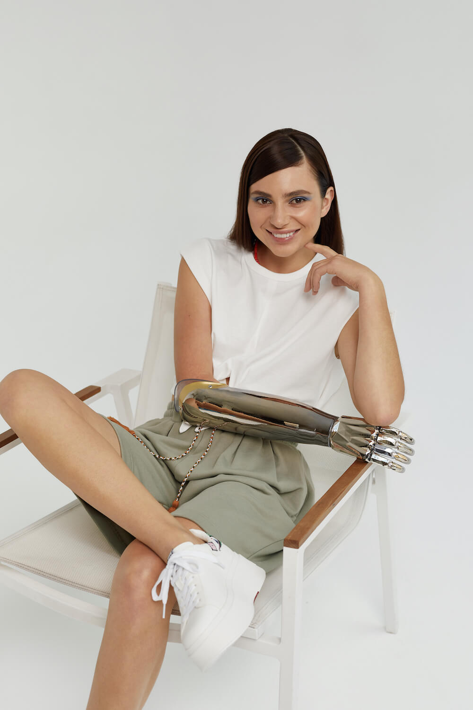
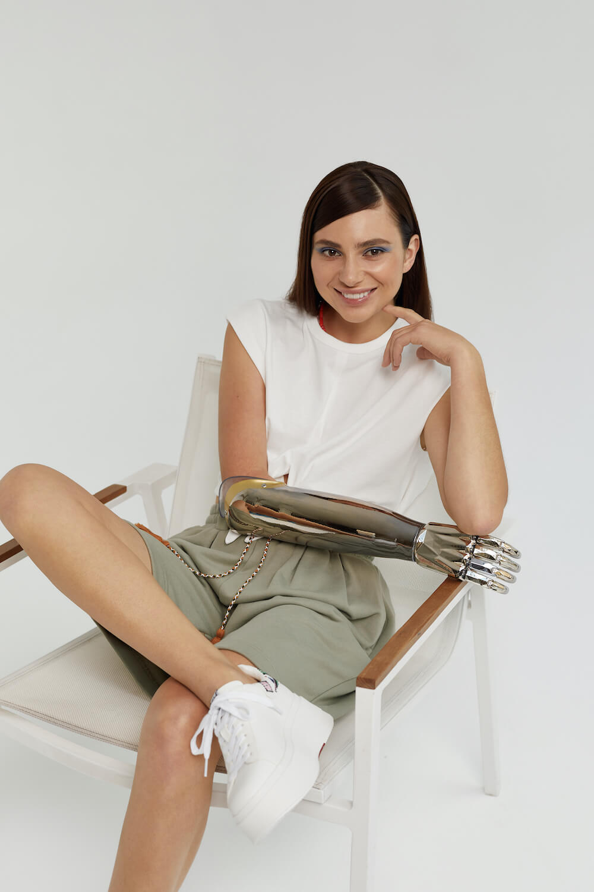

НОВЫЙ ШАГ
К ОСОЗНАННОСТИ
RE / ASH — ЛИНИЯ ЭКО-ОБУВИ И ОДЕЖДЫ ИЗ ОРГАНИЧЕСКОГО ХЛОПКА ДЛЯ ВСЕХ, КТО СТРЕМИТСЯ БЫТЬ ОСОЗНАННЕЙ, ДЕЛАТЬ МИР ЧУТЬ ЛУЧШЕ, ЧИЩЕ И СВЕТЛЕЙ. ПОКУПАТЬ НЕЧТО ПРЕКРАСНОЕ НЕ ТОЛЬКО СНАРУЖИ, НО И ИЗНУТРИ.
В ПОДДЕРЖКУ НОВОГО ДРОПА RE / ASH SS’21 И ЕЕ ФИЛОСОФИИ, МЫ ПРИВЛЕКЛИ ГЕРОИНЬ, КОТОРЫЕ ТОЧНО ТАК ЖЕ КРАСИВЫ НЕ ТОЛЬКО СНАРУЖИ, НО И ВНУТРИ. ИХ ПУТЬ И ИСТОРИИ ПОБУЖДАЮТ БЫТЬ ЛУЧШЕЙ ВЕРСИЕЙ СЕБЯ — ПРИНИМАТЬ СЕБЯ И ПРИНИМАТЬ СВОЮ ПРИРОДУ.
ПОЛЮБИТЬ
СЕБЯ
ПОЛЮБИТЬ
СЕБЯ
Полина столкнулась с неприятием окружающих в детстве и в подростковом возрасте, преодолела неуверенности в себе и начала захватывающую карьеру модели.
Ее глубину и самобытную красоту начали замечать не только в России, но и за границей. В этот же период с Полиной случилась любовь. А вместе с ней — испытание отношениями на расстоянии.
Этот опыт научил Полину любить себя и ценить свое время: вчера, сегодня, завтра, всегда.
НАЧАТЬ
ЖИТЬ

В детстве кажется, что жизнь начинается только с наступлением совершеннолетия. Дальше многие уверены, что начало только в 40. Софья Александровна убеждена, что привязки к цифрам нет. И начать жить можно только в тот момент, когда мы перестаем беспокоиться и отдаемся плавному течению жизни.
Освободить свой ум, отдохнуть душой и телом, распознать свои истинные желания и заниматься только тем, чем действительно хочется — это и есть мудрый рецепт для тех, кто постоянно куда-то бежит, тревожится и «не успевает».
Софья Александровна любит ходить пешком в любую погоду: дождь, снег, изнуряющая жара — неважно. Главное: почувствовать связь с природой и включить все органы чувств, — это то, чего мы лишены в городе, но чего очень хочется. А значит, это и есть по-настоящему важное занятие «здесь и сейчас».

 

СИЛА
ДУХА
У Юлии одна рука железная. Но с детства она самостоятельна и не чувствует никаких ограничений. Она свободна душой и телом, полна энергии и сил.
В школе Юлия занималась всем тем же, чем и одноклассники, была наравне с другими — лазала по канатам, занималась спортом. Родители не давали ей чувствовать себя «ограниченной» — она делала всю работу по дому, помогала маме, и в 16 лет была готова к самостоятельной жизни.
Большую часть детства она провела в деревне, на природе. И сейчас, когда Юлия живет в городе, ее заряжают прогулки в парках, время проведенное в уединенных зеленых местах. Она держит крепкую связь с природой, потому что это помогает ей
своего тела и быть
сильной каждый день

ЭКО-КОЛЛЕКЦИЮ
RE / ASH SS’21